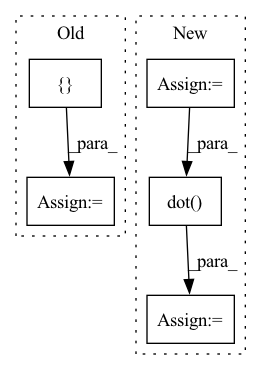

Pattern ID :20737
Before Change
Us = dict() // eigenvectors
Vs = dict() // eigenvalues
cums = dict() // cumulative distribution of eigenvalues
tPs = []
for i in range(n_spl):
X_[..., i] = X[..., i] - self.Xmean
for j in range(self.ndim - 1):
X_i = unfold(X_[..., i], mode=j)
if j not in Phi:
Phi[j] = 0
Phi[j] = Phi[j] + np.dot(X_i, X_i.T)
for i in range(self.ndim - 1):
eig_vals, eig_vecs = np.linalg.eig(Phi[i])
idx_sorted = eig_vals.argsort()[::-1]
Us[i] = eig_vecs[:, idx_sorted]
Vs[i] = eig_vals[idx_sorted]
var_tot = np.sum(Vs[i])
for j in range(Vs[i].shape[0]):
if np.sum(Vs[i][:j]) / var_tot > self.var_explained:
cums[i] = j + 1
break
// if Vs[i][0] / sum_ > self.var_explained:
// cums[i] = 1
// else:
// for j in range(Vs[i].shape[0] - 1, 0, -1):
// if np.sum(Vs[i][j:]) / sum_ > (1 - self.var_explained):
// cums[i] = j + 1
// break
tPs.append(Us[i][:, :cums[i]].T)
for i_iter in range(self.max_iter):
Phi = dict()
for i in range(self.ndim - 1):
if i not in Phi:
Phi[i] = 0
for j in range(n_spl):
X_i = X_[..., j]
Xi_ = multi_mode_dot(X_i, [tPs[m] for m in range(self.ndim - 1) if m != i],
modes=[m for m in range(self.ndim - 1) if m != i])
tXi = unfold(Xi_, i)
Phi[i] = np.dot(tXi, tXi.T) + Phi[i]
eig_vals, eig_vecs = np.linalg.eig(Phi[i])
idx_sorted = eig_vals.argsort()[::-1]
tPs[i] = eig_vecs[:, idx_sorted]
tPs[i] = tPs[i][:, :cums[i]].T
self.tPs = tPs
return self
After Change
proj_mats[i] = (proj_mats[i][:, :shape_out[i]]).T
x_transformed = multi_mode_dot(X, proj_mats, modes=[m for m in range(self.ndim - 1)])
x_trans_vecs = unfold(x_transformed, mode=-1)
x_trans_vars = np.diag(np.dot( x_trans_vecs, x_trans_vecs.T) )
idx_order = x_trans_vars.argsort()[::-1]
self.proj_mats = proj_matsIn pattern: SUPERPATTERN
Frequency: 3
Non-data size: 5
Instances Fragment ID: 66852892
Project Name: pykale/pykale
Commit Name: 8a8cdd2ecbefbe9517789f6015a0d4e937733f6a
Time: 2020-12-26
Author: szhou20@sheffield.ac.uk
File Name: kale/embed/mpca.py
M Class Name: MPCA
N Class Name: MPCA
M Method Name: _fit(2)
N Method Name: _fit(2)
M Parent Class: BaseEstimator,TransformerMixin
N Parent Class: BaseEstimator,TransformerMixin
M File Name: kale/embed/mpca.py
N File Name: kale/embed/mpca.py
M Start Line: 79
M End Line: 127
N Start Line: 122
N End Line: 189
Before Change
def distance(a, b):
a_bbox = a.get_bbox()
b_bbox = b.get_bbox()
bbox = max_bbox([ a_bbox, b_bboxAfter Change
dists = np.linalg.norm(a - b, axis=1)
dists = dists[:-1] + dists[1:]
a_steps = np.linalg.norm(a[1:] - a[:-1], axis=1)
b_steps = np.linalg.norm(b[1:] - b[:-1], axis=1)
// For the common bbox we can"t use
// - the AABB (axis-alinged bbox) of a point set
// - the exterior of a point set
// - the convex hull of a point set
// because these soultions won"t be correctly normalized.
// The lines can have multiple self-intersections, which can give
// the inter-line area more than internal area of the options above,
// producing the value of the distance outside of the [0; 1] range.
//
// Instead, we can compute the upper boundary for the inter-line
// area based on the maximum point distance and line length.
max_area = np.max(dists) * max(np.sum(a_steps), np.sum(b_steps))
area = np.dot( dists, a_steps + b_steps) * 0.5 * 0.5 / max_area
return abs(1 - area)
Fragment ID: 66852869
Project Name: openvinotoolkit/datumaro
Commit Name: 4b53be73721c23738592db619b89fdb1cc18f2fe
Time: 2021-12-22
Author: maxim.zhiltsov@intel.com
File Name: datumaro/components/operations.py
M Class Name: LineMatcher
N Class Name: LineMatcher
M Method Name: distance(2)
N Method Name: distance(2)
M Parent Class: _ShapeMatcher
N Parent Class: _ShapeMatcher
M File Name: datumaro/components/operations.py
N File Name: datumaro/components/operations.py
M Start Line: 771
M End Line: 785
N Start Line: 776
N End Line: 809
Before Change
if pad:
scale = np.min([float(w2)/w1, float(h2)/h1])
else:
scale = np.max([ float(w2)/w1, float(h2)/h1After Change
dx = (w2 - w1) / 2.0
dy = (h2 - h1) / 2.0
matrix_trans = np.array([[1.0, 0, dx],
[0, 1.0, dy],
[0, 0, 1.0]])
scale = np.min([float(w2)/w1, float(h2)/h1])
M = get_affine_matrix(
center = (w2 / 2.0, h2 / 2.0),
translate = (0, 0),
scale = scale)
M = np.array(M + [0., 0., 1.]).reshape(3, 3)
M = M.dot( matrix_trans)
return M
Fragment ID: 66852871
Project Name: yuliangxiu/icon
Commit Name: 5f5c704c4643c183d8a110b5f6c2010c66b84567
Time: 2022-02-24
Author: yuliang.xiu@tuebingen.mpg.de
File Name: lib/pymaf/utils/streamer.py
M Class Name: AnonimousClass
N Class Name: AnonimousClass
M Method Name: aug_matrix(4)
N Method Name: aug_matrix(5)
M Parent Class:
N Parent Class:
M File Name: lib/pymaf/utils/streamer.py
N File Name: lib/pymaf/utils/streamer.py
M Start Line: 6
M End Line: 15
N Start Line: 7
N End Line: 23